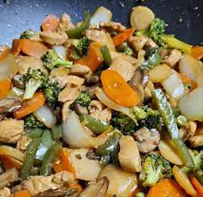

Chicken Stir-Fry

Description
A quick and easy dish to prepare, this chicken stir-fry
is packed with veggies. Try adding bean sprouts, bamboo
shoots, snap peas, or any of your favorite vegetables.
Serve it with white or brown rice, or noodles.
Ingredients
- 2 cups white rice
- 4 cups water
- ⅔ cup soy sauce
- ¼ cup brown sugar
- 1 tablespoon cornstarch
- 1 tablespoon minced fresh ginger
- 1 tablespoon minced garlic
- ¼ teaspoon red pepper flakes
- 3 skinless, boneless chicken breast halves, thinly sliced
- 1 tablespoon sesame oil
- 1 green bell pepper, cut into matchsticks
- 1 (8 ounce) can sliced water chestnuts, drained
- 1 head broccoli, broken into florets
- 1 cup sliced carrots
- 1 onion, cut into large chunks
Steps
- Bring rice and water to a boil in a saucepan over high
heat. Reduce heat to medium-low, cover, and simmer until
rice is tender, and liquid has been absorbed, 20 to 25
minutes.
- Combine soy sauce, brown sugar, and corn starch in a
small bowl; stir until smooth. Mix ginger, garlic, and
red pepper into sauce; coat chicken with marinade and
refrigerate for at least 15 minutes.
- Heat 1 tablespoon sesame oil in a large skillet over
medium-high heat. Cook and stir bell pepper, water chestnuts,
broccoli, carrots, and onion until just tender, about 5
minutes. Remove vegetables from skillet and keep warm.
- Remove chicken from marinade, reserving liquid. Heat 1
tablespoon sesame oil in skillet over medium-high heat.
Cook and stir chicken until slightly pink on the inside,
about 2 minutes per side; return vegetables and reserved
marinade to skillet. Bring to a boil; cook and stir until
chicken is no longer pink in the middle and vegetables
are tender, 5 to 7 minutes. Serve over rice.